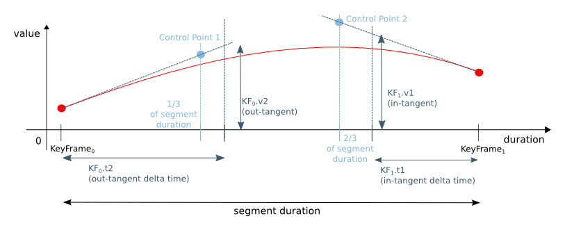

- java.lang.Object
-
- javafx.animation.Interpolator
-
-
Field Summary
Fields Modifier and Type Field 描述 static InterpolatorDISCRETE内置插值器，提供离散时间插值。static InterpolatorEASE_BOTH内置插件器实例，提供简单的输入/输出行为。static InterpolatorEASE_IN内置插件器实例，提供行为方便。static InterpolatorEASE_OUT内置interpolator实例，提供轻松的行为。static InterpolatorLINEAR内置插值器，提供线性时间插值。
-
构造方法摘要
构造方法 Modifier Constructor 描述 protectedInterpolator()构造函数为Interpolator。
-
方法摘要
所有方法 静态方法 接口方法 抽象方法 具体的方法 Modifier and Type 方法 描述 protected abstract doublecurve(double t)从[0.0..1.0]映射到本身。booleaninterpolate(boolean startValue, boolean endValue, double fraction)这个方法有两个boolean与沿值fraction之间0.0和1.0并返回插补值。doubleinterpolate(double startValue, double endValue, double fraction)这个方法有两个double与沿值fraction之间0.0和1.0并返回插补值。intinterpolate(int startValue, int endValue, double fraction)这个方法有两个int与沿值fraction之间0.0和1.0并返回插补值。longinterpolate(long startValue, long endValue, double fraction)这个方法有两个int与沿值fraction之间0.0和1.0并返回插补值。Objectinterpolate(Object startValue, Object endValue, double fraction)这个方法有两个Objects与沿fraction之间0.0和1.0并返回插补值。static InterpolatorSPLINE(double x1, double y1, double x2, double y2)static InterpolatorTANGENT(Duration t, double v)创建切线内插器，切线和切线相同。static InterpolatorTANGENT(Duration t1, double v1, Duration t2, double v2)创建切线插值器。
-
-
-
字段详细信息
-
DISCRETE
public static final Interpolator DISCRETE
内置插值器，提供离散时间插值。 的返回值interpolate()是endValue仅当输入fraction是1.0，和startValue否则。
-
LINEAR
public static final Interpolator LINEAR
内置插值器，提供线性时间插值。interpolate()的回报值为startValue+（endValue-startValue）*fraction。
-
EASE_BOTH
public static final Interpolator EASE_BOTH
内置插件器实例，提供简单的输入/输出行为。一个容易的插件将使一个动画开始缓慢，然后加速和再次减速到最后，一切顺利的方式。
该实现使用SMIL 3.0中定义的缓和算法，加速和减速因子分别为0.2。
-
EASE_IN
public static final Interpolator EASE_IN
内置插件器实例，提供行为方便。一个易于插入的插件将使动画开始缓慢，然后平滑加速。
该实现使用SMIL 3.0中定义的缓动算法，加速因子为0.2。
-
EASE_OUT
public static final Interpolator EASE_OUT
内置interpolator实例，提供轻松的行为。一个易于使用的内插器将使动画慢慢向下缓慢向前。
实现使用SMIL 3.0中定义的减速算法，减速系数为0.2。
-
-
方法详细信息
-
SPLINE
public static Interpolator SPLINE(double x1, double y1, double x2, double y2)
创建一个Interpolator，其curve()使用由（定义样条控制点状x1，y1）和（x2，y2）。 样条曲线的锚点被隐含地定义为（0.0，0.0）和（1.0，1.0）。- 参数
-
x1- 第一个控制点的x坐标 -
y1- 第一个控制点的y坐标 -
x2- 第二个控制点的x坐标 -
y2- 第二个控制点的y坐标 - 结果
- 样条插值器
-
TANGENT
public static Interpolator TANGENT(Duration t1, double v1, Duration t2, double v2)
创建切线插值器。 切线插补器允许通过定义靠近关键帧的切线来非常精确地定义动画曲线的行为。 切线插补器定义关键帧左侧和右侧的行为，因此仅在Timeline中有用。 如果在具有不同插值器的KeyFrame之后的KeyFrame中使用，则将其视为与该KeyFrame中的正切相等于KeyFrame中的值。
参数定义切线（关键帧之前）和切线（关键帧之后）的动画曲线的切线。 每个切线用一对指定，到关键帧的距离和此刻的切线值。
插值然后遵循贝塞尔曲线，其中2个控制点由指定的切线定义，并位于第二个键盘框之前或第一个键盘框之后的持续时间的1/3。 见上图。
- 参数
-
t1- 相对于KeyFrame的正切值的delta时间 -
v1- 正切值 -
t2- 相对于KeyFrame的外切的delta时间 -
v2- 外切值的值 - 结果
- 新的切线插值器
-
TANGENT
public static Interpolator TANGENT(Duration t, double v)
创建切线内插器，切线和切线相同。 这对于Timeline的第一个和最后一个关键帧特别有用，因为对于这些关键帧，仅使用一个切线。- 参数
-
t- 切线的delta时间 -
v- 切线的值 - 结果
- 新的切线插补器
- 另请参见：
-
TANGENT(Duration, double, Duration, double)
-
interpolate
public Object interpolate(Object startValue, Object endValue, double fraction)
这个方法有两个Objects与沿fraction之间0.0和1.0并返回插补值。如果
Objects实现Number，则它们的值被内插。 如果startValue器具Interpolatable中定义的计算interpolate()被使用。 如果这两个条件都满足，离散插值的方法，即endValue返回当且仅当fraction为1.0，否则startValue返回。在计算内插值之前，根据
curve()中定义的函数改变分数。- 参数
-
startValue- 起始值 -
endValue- 终值 -
fraction- 介于0.0和1.0之间的值 - 结果
- 内插值
-
interpolate
public boolean interpolate(boolean startValue, boolean endValue, double fraction)这个方法有两个boolean与沿值fraction之间0.0和1.0并返回插补值。在计算内插值之前，根据
curve()中定义的函数改变分数。- 参数
-
startValue- 第一个数据点 -
endValue- 第二个数据点 -
fraction- 分数在[0.0...1.0] - 结果
- 内插值
-
interpolate
public double interpolate(double startValue, double endValue, double fraction)这个方法有两个double与沿值fraction之间0.0和1.0并返回插补值。在计算内插值之前，根据
curve()中定义的函数改变分数。- 参数
-
startValue- 第一个数据点 -
endValue- 第二个数据点 -
fraction- 分数在[0.0...1.0] - 结果
- 内插值
-
interpolate
public int interpolate(int startValue, int endValue, double fraction)这个方法有两个int与沿值fraction之间0.0和1.0并返回插补值。在计算内插值之前，根据
curve()中定义的函数改变分数。- 参数
-
startValue- 第一个数据点 -
endValue- 第二个数据点 -
fraction- 分数在[0.0...1.0] - 结果
- 内插值
-
interpolate
public long interpolate(long startValue, long endValue, double fraction)此方法需要两个int值，fraction之间的0.0和1.0之间返回内插值。在计算内插值之前，根据
curve()中定义的函数改变分数。- 参数
-
startValue- 第一个数据点 -
endValue- 第二个数据点 -
fraction- 分数在[0.0...1.0] - 结果
- 内插值
-
curve
protected abstract double curve(double t)
从[0.0..1.0]映射到本身。- 参数
-
t- 时间，但归一化到范围[0.0..1.0]，其中0.0是当前间隔的开始，而1.0是当前间隔的结束。 通常是单调递增的函数。 - 结果
- 曲线值
-
-